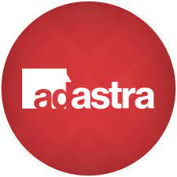
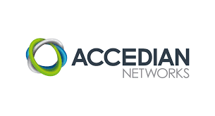
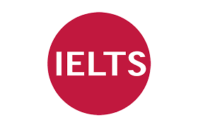
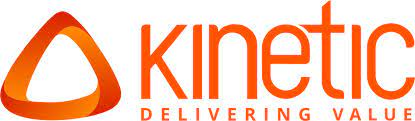

Manuel Alejandro Guzman
Cordoba, Cordoba, Argentina
manuel.aguz@outlook.com https://www.linkedin.com/in/manuel-alejandro-guzman-5795a3208/ https://github.com/manuel-guzSummary
The words that describe me the best are efficiency and communication. I have always worked in environments where leadership skills were needed, as well as multitasking. I always do my job seeking top quality and being an asset for the company I work.
Experience
 Freelance Translator
- Ad Astra, Inc.
- Sep 2020 - Present (1 year 1 month +)
- Translation of texts of different genres
- DTP
Desktop Publishing Specialist
- Ad Astra, Inc.
- Sep 2020 - Present (1 year 1 month +)
Telecommunications Engineer
- Claro Argentina AMX
- Mar 2016 - Present (5 years 7 months +)
Education
 Universidad Tecnológica Nacional BA
Universidad Tecnológica Nacional BA
- Higher National Diploma, Full Stack Web Development
- 2021 - 2021
Instituto Universitario Aeronáutico
- Bachelor's degree, Computer Systems Networking and Telecommunications
- 2010 - 2017
Licenses & Certifications
 Skylight Solution Traini
- Accedian
- 2010 - 2017
 IELTS - IELTS Official
- Issued Sep 2020 - Expires Sep 2022
- Candidate n° 000348
 Competencias Interpersonales para Equipos de Alto Desempeño
- Kinetic
 Cisco Certified Network Associate Routing and Switching (CCNA)
Cisco Certified Network Associate Routing and Switching (CCNA)
- UTN
- Facultad Regional Córdoba
Skills
• Media Strategy • Project Management • Engineering • Data Analytics • Adobe Photoshop • Memoq • Adobe Illustrator • Adobe Lightroom • Adobe Acrobat • Web Development